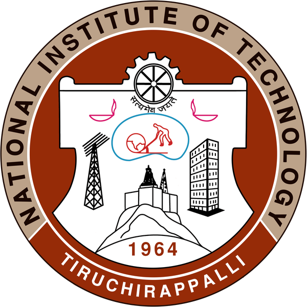
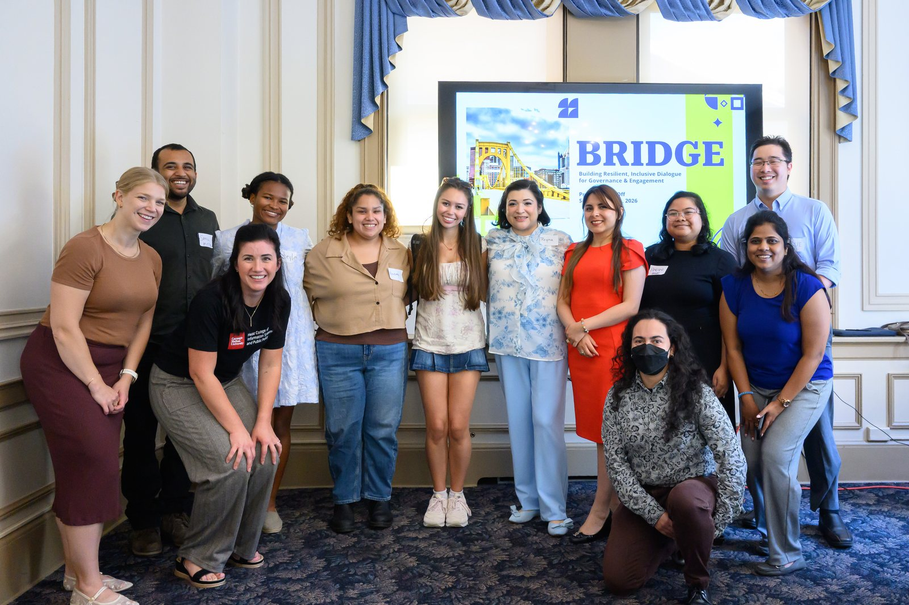

Sahil Mittal
Interested in Labor Economics, Transit and Education Policy
I’m a first-year MSPPM-DA student at Carnegie Mellon’s Heinz College, working on empirical questions in labor economics and education policy.
I spent four years at Plaksha University, a new private institution in Punjab. Two of them went into building its Office of Corporate Partnerships and Careers from nothing — strategy, operations and employer relationships for 700+ students at a university with no placement record to trade on. The last year was in the Vice Chancellor’s office, on institutional strategy and applied governance projects with Invest Punjab.
Watching which students got hired, and which didn’t, is what moved me from operating inside a labor market to studying one.
Right now
Fellowship
BRIDGE Program
Inaugural cohort of Heinz College’s dialogue and governance program, run with Pitt’s School of Public and International Affairs. Eight months of civil discourse, mediation and conflict management.
Project
MBTA equity corridors
Ranked every MBTA bus route by transit dependence weighted by ridership, then built the cost-benefit case for a $6.5M bus-priority package. Second place at the MIT Policy Hackathon.
In progress
Reading data analysis
Several years of my own Goodreads library, tested against a hunch: that fiction absorbs the shock of major life transitions while nonfiction holds steady.
Where I’ve been

Minor in Physics
Learning to disagree well

The inaugural BRIDGE cohort at the kickoff session, University of Pittsburgh, September 2026.Policy analysis assumes that someone, eventually, will be persuaded. BRIDGE is eight months of taking that assumption seriously — workshops on civil discourse, mediation and conflict management, run jointly by Heinz and Pitt SPIA, ending in a student-led campus event next spring.
It’s the part of the training that doesn’t show up in a regression table.
Teaching
Teaching is where the education-policy interest actually started. It is one thing to read that pedagogy matters, another to watch a structured reasoning task land with thirty students and miss five.
Outreach and community
Zeroing In: The Science Podcast Chief editor for three seasons of conversations with Indian scientists, including B. N. Suresh, former director of the Vikram Sarabhai Space Centre, and Rajesh Gopakumar, director of ICTS-TIFR. Ran sessions connecting researchers with 500+ school students.
Nakshatra, NIT Trichy Led the astronomy society’s thirty-person team, including the construction of a student-built radio telescope and an annual festival that drew 400+ participants.
Girls and Women in STEM, Plaksha Core team; convener of the Internal Complaints Committee and lead for the PRISM LGBTQ+ inclusion initiative.
Off the clock
I read a lot and keep obsessive records of it, which is how the Goodreads project started. I cook mostly by improvisation — whatever the pantry has, whatever it turns into. Both are, I suspect, the same instinct: a preference for working with what’s actually in front of you rather than what the plan called for.